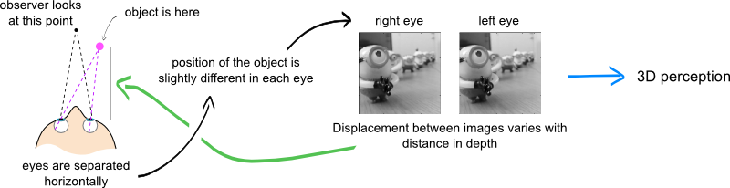

nuno gonçalves
I am a graduate student at the University of Cambridge. I investigate how the brain uses binocular information to estimate 3-dimensional structure. My long term goal is to advance our understanding of the brain.

news
26 Aug 2015
Presenting our work on layer dependent fMRI at ECVP. Hoping to get feedback!
03 Mar 2015
On my way to Cosyne 2015 to present a preference for stereopsis in deep layers of human V1.
01 Feb 2015
Our paper on disparity organization is out in the Journal of Neuroscience.
14 Apr 2014
Poster accepted at VSS 2014: Disparity organization revealed using 7T fMRI.
01 Dec 2013
Moved to the University of Cambridge. You can find me in the Adaptive Brain Lab.
contact me

Nuno Gonçalves
Department of Psychology, University of Cambridge, Cambridge, CB2 3EB, UK
nrg30 at cam dot ac dot uk
copyright © Nuno Gonçalves